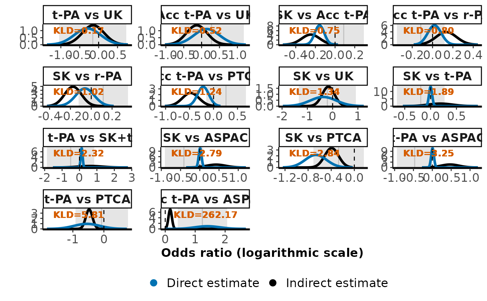

Density plots of local inconsistency results and Kullback-Leibler divergence (When dataset is created by the user)
Source:R/kld.inconsistency.user_function.R
kld_inconsistency_user.RdWhen the user has extracted results obtained from a method of local
inconsistency evaluation (e.g., loop-specific, back-calculation or
node-splitting approaches) as reported in publication, this function
provides the same output with the function kld_inconsistency.
A panel of density plots on the direct and indirect estimates of the
selected comparisons based on approach for local inconsistency evaluation,
such as back-calculation and node-splitting approaches (Dias et al., 2010;
van Valkenhoef et al., 2016) and loop-specific approach (Bucher et al., 1997)
accompanied by the Kullback-Leibler divergence from the indirect to direct
estimate.
Arguments
- dataset
A data-frame of seven columns and as many rows as the split nodes. The first column contains the names of the split nodes, and the remaining columns have the point estimate and standard error of the direct, indirect and inconsistency parameter in that order.
- threshold
A positive number indicating the threshold of not concerning inconsistency, that is, the minimally allowed deviation between the direct and indirect estimates for a split node that does raise concerns for material inconsistency. The argument is optional.
- level
A number indicating the significance level. Suggested values are 0.05 and 0.10. The default value is 0.05.
- outcome
Optional argument to describe the effect measure used (the x-axis of the plots).
Value
A panel of density plots for each split node sorted in ascending
order of the Kullback-Leibler divergence value. Blue and black lines refer to
the direct and indirect estimates, respectively. The grey segment refers to
the (1 - level)% 'pseudo' confidence interval of the inconsistency
parameter based on the corresponding normal z-scores, with a darker grey line
referring to the point estimate. The names of the selected comparisons appear
at the top of each plot.
The Kullback-Leibler divergence value appears at the top left of each plot
in three colours: black, if no threshold has been defined (the default),
green, if the Kullback-Leibler divergence is below the specified
threshold (not concerning inconsistency) and red, if the
Kullback-Leibler divergence is at least the specified threshold
(substantial inconsistency).
References
Bucher HC, Guyatt GH, Griffith LE, Walter SD. The results of direct and indirect treatment comparisons in meta-analysis of randomized controlled trials. J Clin Epidemiol 1997;50(6):683--91.
Dias S, Welton NJ, Caldwell DM, Ades AE. Checking consistency in mixed treatment comparison meta-analysis. Stat Med 2010;29(7-8):932--44. doi: 10.1002/sim.3767
Kullback S, Leibler RA. On information and sufficiency. Ann Math Stat 1951;22(1):79--86. doi: 10.1214/aoms/1177729694
van Valkenhoef G, Dias S, Ades AE, Welton NJ. Automated generation of node-splitting models for assessment of inconsistency in network meta-analysis. Res Synth Methods 2016;7(1):80--93. doi: 10.1002/jrsm.1167
Examples
## Data are taken from Table II in Dias et al. (2010)
# Treatments compared
treat <-
c("SK", "t-PA", "Acc t-PA", "SK+t-PA", "r-PA", "TNK", "PTCA", "UK", "ASPAC")
# Baseline arm (from each selected comparison)
base <- rep(1:3, c(6, 3, 5))
# Non-baseline arm (from each selected comparison)
nonbase <- c(2, 3, 5, 7, 8, 9, 7, 8, 9, 4, 5, 7, 8, 9)
# Compared treatments with their names
treat_comp <-
mapply(function(x, y) paste(treat[x], "vs", treat[y]), base, nonbase)
# Direct results
direct_mean <- c(0.000, -0.158, -0.060, -0.666, -0.369, 0.009, -0.545,
-0.295, 0.006, 0.126, 0.019, -0.216, 0.143, 1.409)
direct_sd <- c(0.030, 0.048, 0.089, 0.185, 0.518, 0.037, 0.417, 0.347, 0.037,
0.054, 0.066, 0.118, 0.356, 0.415)
# Indirect results
indirect_mean <- c(0.189, -0.247, -0.175, -0.393, -0.168, 0.424, -0.475,
-0.144, 0.471, 0.630, 0.135, -0.477, -0.136, 0.165)
indirect_sd <- c(0.235, 0.092, 0.081, 0.120, 0.244, 0.252, 0.108, 0.290,
0.241, 0.697, 0.101, 0.174, 0.288, 0.057)
# Inconsistency
incons_mean <- c(-0.190, 0.088, 0.115, -0.272, -0.207, -0.413, -0.073,
-0.155, -0.468, -0.506, -0.116, 0.260, 0.277, 1.239)
incons_sd <- c(0.236, 0.104, 0.121, 0.222, 0.575, 0.253, 0.432, 0.452, 0.241,
0.696, 0.120, 0.211, 0.461, 0.420)
# Collect results in a data-frame (exactly as required from the function)
dias_results <- data.frame(treat_comp, direct_mean, direct_sd, indirect_mean,
indirect_sd, incons_mean, incons_sd)
# Apply the function
kld_inconsistency_user(dataset = dias_results,
threshold = 0.13,
outcome = "Odds ratio (logarithmic scale)")
#> Note: Make sure that you have created the dataset according to the description of the argument 'dataset'.
#> Threshold specified at 0.13.
#> Significance level specified at 0.05 (the default).
